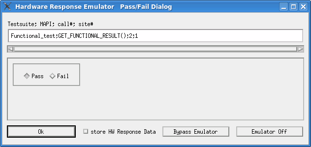

Using hardware response files for execution
Before you begin
Make sure that you have prepared the hardware response files for all the test suites and test method APIs for retrieving data.
Procedure
Results
The emulator is called at when the test suites and test method APIs for retrieving data are executed. The emulator returns data from the hardware response file.
If the required hardware response file is not found, the Hardware Response Emulator Dialog window opens to prompt you to specify the result data for the test suite or method API and save it in a hardware response file. This emulator dialog for the "Import" mode is similar to the dialog for "Store" mode except:
- Testsuite; call#; site#
This field displays the test suite name that takes the pass/fail result of the test suite specified in this dialog. Note that the method program name is not specified here. Other expressions in this field are the same as in the pass/fail type dialog for "Store" mode.
- Store hardware response data
This field displays whether a hardware response file is to be created or not, and only give user-provided data.
Example
When the hardware response file is not found for the execution of a test suite with the pass/fail result, the Hardware Response Emulator Pass/Fail Dialog window for the "Import" mode opens.

Functional changes
- Introduced before SmarTest 6.3.2
- SmarTest 6.5.3: The procedure of using hardware response files for execution is changed.